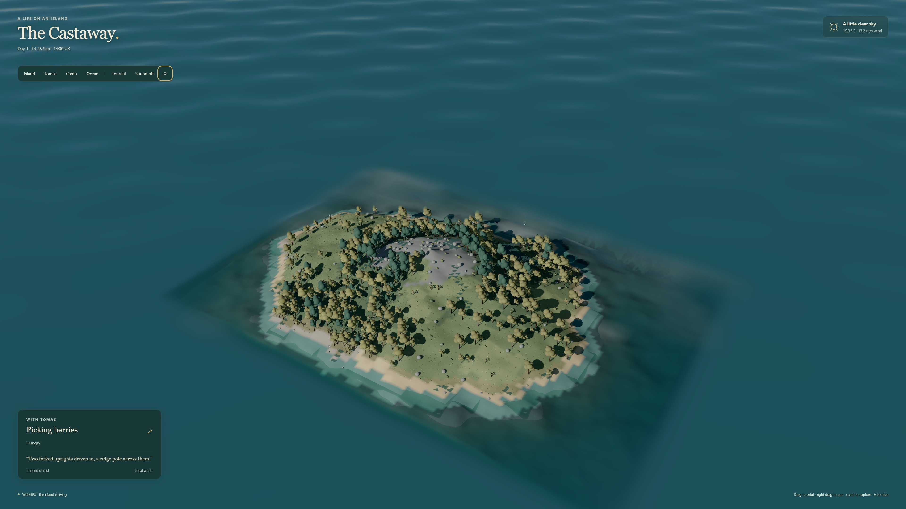
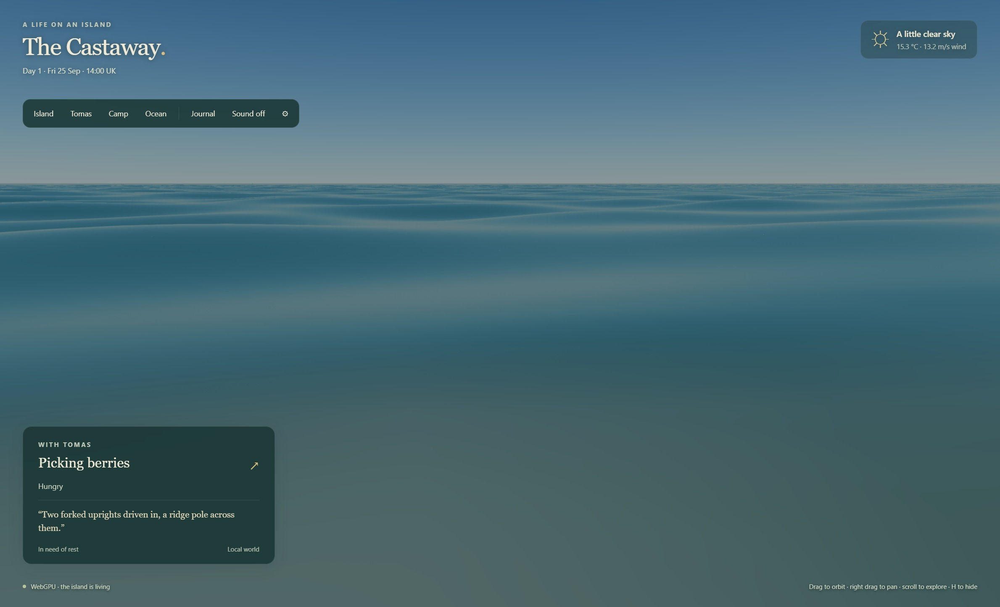
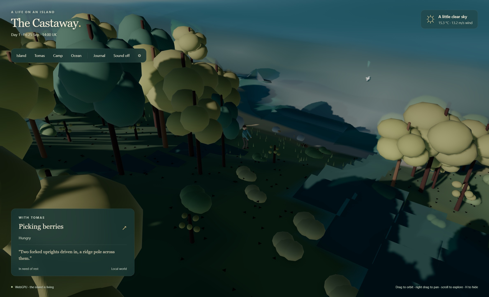

A little island.
A life of its own.
Spend a quiet moment with Tomas. The sea moves, the light changes, and his life unfolds by the real UK clock. Now with a full 3D world built for a powerful PC.
Windows 11 · x64 · dedicated graphics card. Version 1.0.0 is unsigned.

His days keep unfolding.
Tomas plans, builds, eats, rests and learns. Weather moves through the island, water and salt flow through connected systems, and plants and animals live from finite resources. His journal records the things that actually happen.
The desktop preserves the existing simulator, checkpoints and thought history. It catches up while you have been away and saves locally when you close it.
Watch the light on the water.
The saved wave energy and phase now move a physical mesh. Sun, moon and burning fuel illuminate the world and cast shadows. The procedural soundscape follows the weather, shore and your listening position.
High and Ultra let you choose how finely to draw the world. The simulation keeps the same equations and physical steps at either setting.


Make yourself comfortable.
Install and open The Castaway from the Start menu. Or extract the complete ZIP and run The Castaway.exe. Drag to orbit, scroll to zoom, press F to follow Tomas and M for sound. Settings offer full screen, quality, exposure and world export.
Controls, saves and installation · Model assumptions and verification